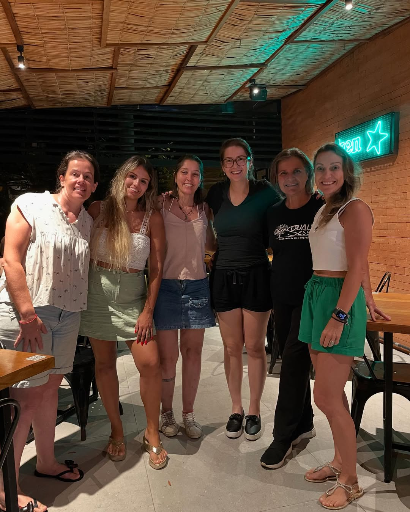

Início
Sobre nós
Como ajudar
Campanhas
Animais para adoção
Entre em contato
BEM-VINDO
Cuidando de quem só
precisa de amor
No Projeto ResgAUtinhos, damos uma nova chance para cães e gatos abandonados encontrarem um lar cheio de carinho.
Entre em contato
